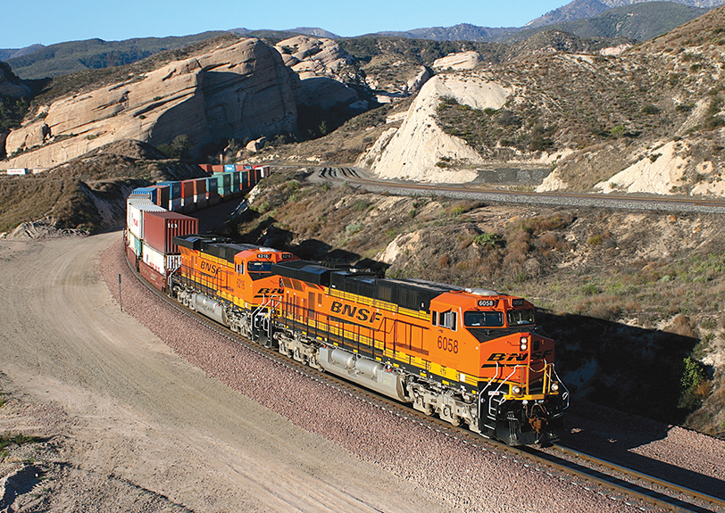

Why would a locomotive be fascinating and cool. Well, starting with steam locomotive and onward are behemoth. These machines are powerful, to stand by a locomotive as it passes by is quite riviting as many tons of steel move by. With steam locomotive, the transfer of power to the wheels is out in the open for all to see and the movement is mesmerizing. For modern locomotives, there is evident power in these machines are it moves by with the throaty rumble of the desiel engine and the elegant corners of the housing. Not to mention the efficiency is impressive in their ability to move the massive amounts of cargo.